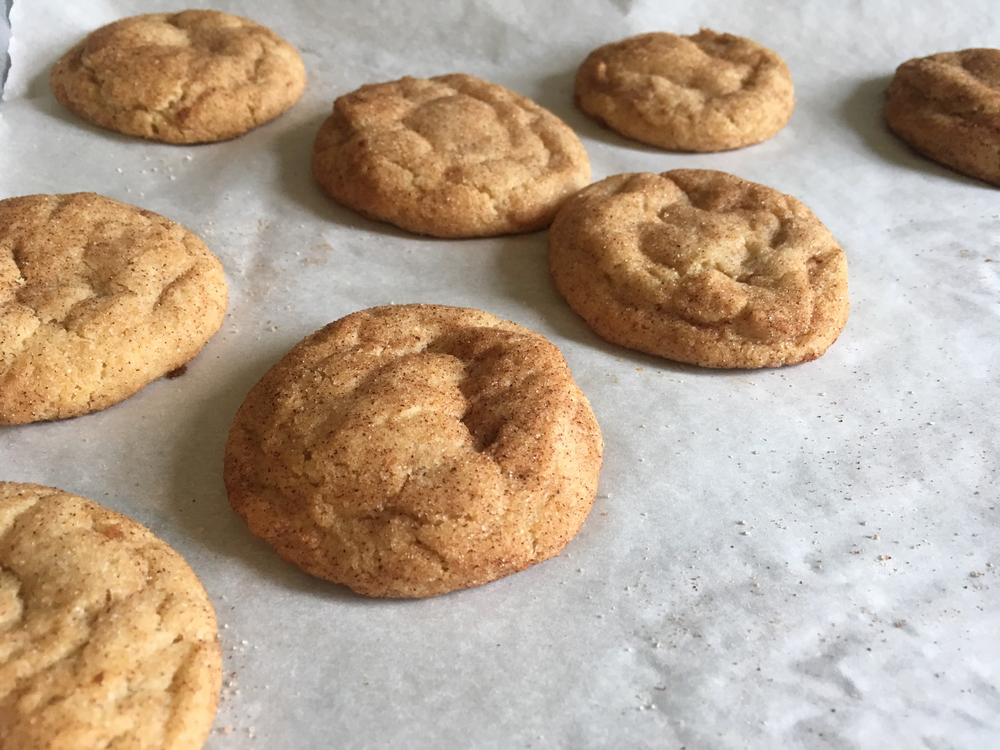

Order Now Menu Image Gallery

In the 10th grade after hearing about orphans in Africa with AIDs she determined to help by selling her baked goods and donating all the proceeds to an organization combating the issue. Throughout the years Hannah's involvement in social justice issues has developed and changed, but her heart to engage with the issues and bring restoration, wholeness and freedom has stayed the same.
As a way of being involved even now, a portion of the profits Just Desserts receives goes to supporting organizations who are actively engaged in anti-human trafficking activities...Click below to read more!
More Than Just Desserts